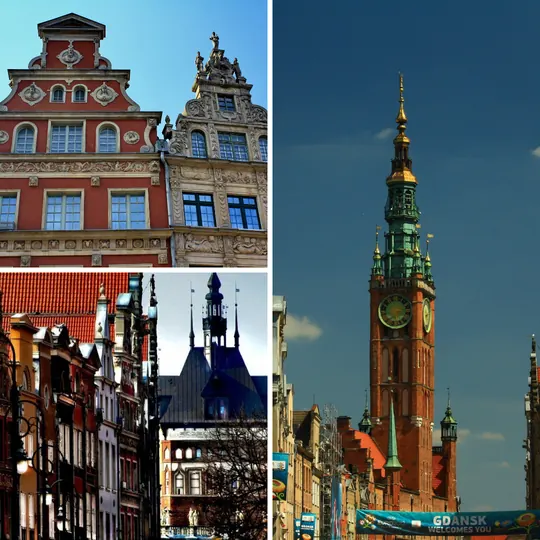
Główne Miasto
historia łączy się z nowoczesnościąDroga Królewska, Żuraw, nowa kładka na Wyspę Spichrzów, ulica Mariacka i wieża kościoła Mariackiego.
2-3 godziny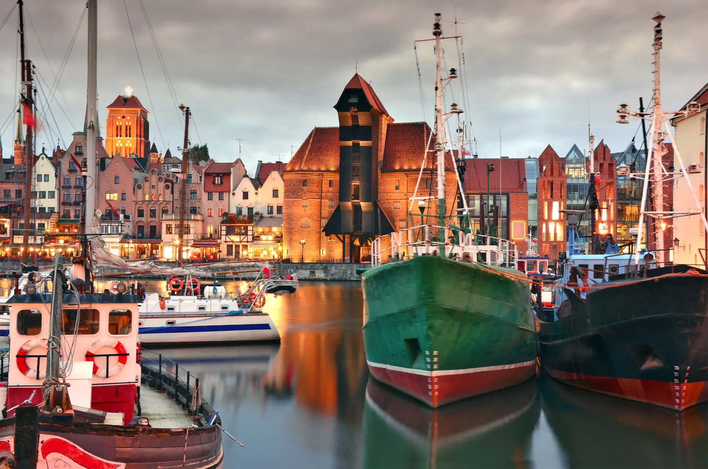
Zwiedzaj ze mną Trójmiasto i okolice. Jestem gdańszczanką z urodzenia, a przewodniczką z wyboru. Pokażę Ci miasto pieszo, z deski SUP, z roweru i w muzeach.
Hanna Adamus, licencja przewodnika od 2017 r.
Oprowadzam po polsku, angielsku i rumuńsku
Jak cztery strony róży wiatrów. Wybierz, jak chcesz poznać miasto, a resztę ułożymy razem po krótkiej rozmowie.
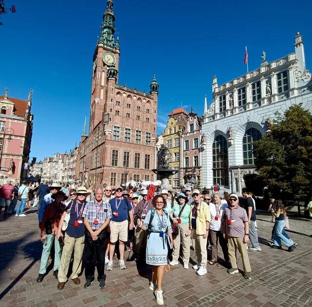
Główne Miasto, stocznia, Oliwa, Sopot, Gdynia i Hel. Trasa ułożona pod Twój czas i zainteresowania.
Zobacz trasy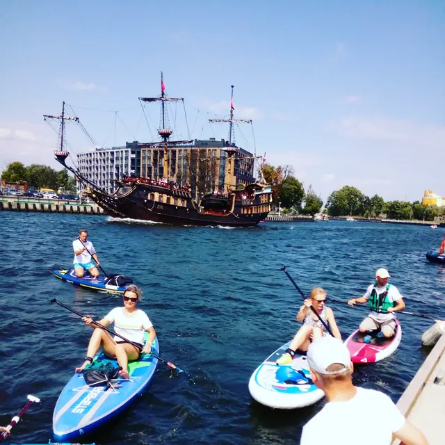
Motława z deski SUP, kajaka, galaru albo żaglowca. Podstaw wiosłowania uczymy na miejscu, kondycja i wiek nie mają znaczenia.
Wycieczki SUP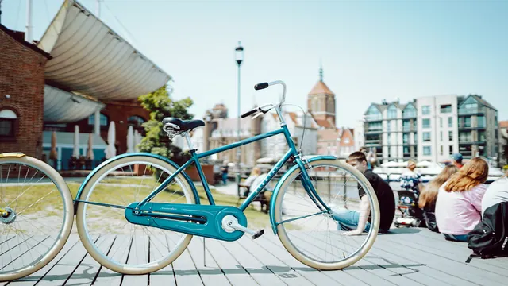
Trójmiasto w 1 dzień, Wyspa Sobieszewska i grupy szkolne z certyfikowanym przewodnikiem rowerowym.
Wycieczki rowerowe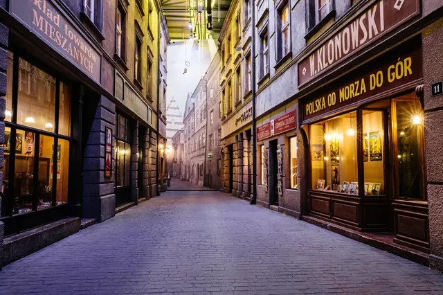
ECS, Muzeum II Wojny Światowej, Muzeum Emigracji, Stutthof i oddziały Muzeum Gdańska, z uprawnieniami w każdym z nich.
Muzea i cenyMożemy zwiedzić całe Trójmiasto albo tylko jedno z miast. W zależności od czasu skupimy się na głównych atrakcjach albo na mniej popularnych szlakach.

Droga Królewska, Żuraw, nowa kładka na Wyspę Spichrzów, ulica Mariacka i wieża kościoła Mariackiego.
2-3 godziny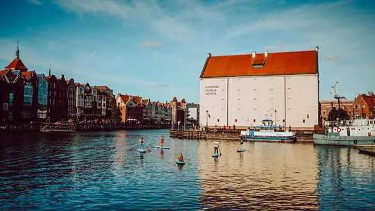
Kajaki, deski SUP, jachty, żaglowce, galary i galeony. Miasto widziane z poziomu rzeki.
do ustalenia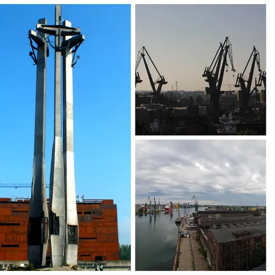
Dawna Stocznia Cesarska, punkt widokowy Żuraw M3, rejs galarem z Przystani Cesarskiej i wystawa w Europejskim Centrum Solidarności.
2-4 godziny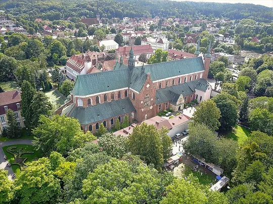
Katedra z organami o ponad 7800 piszczałkach, Park Oliwski, Pałac Opatów i widok z 32. piętra Olivia Star.
2-3 godziny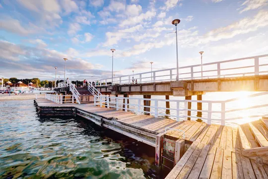
Westerplatte, Brzeźno z Domem Zdrojowym i molo, Wyspa Sobieszewska z rezerwatami Ptasi Raj i Mewia Łacha.
2-4 godziny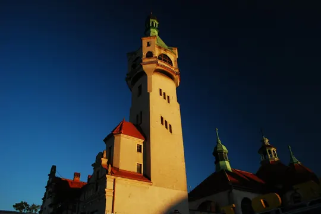
Monciak, najdłuższe drewniane molo nad Bałtykiem, Grand Hotel i panorama Zatoki Gdańskiej z dawnej latarni.
ok. 3 godziny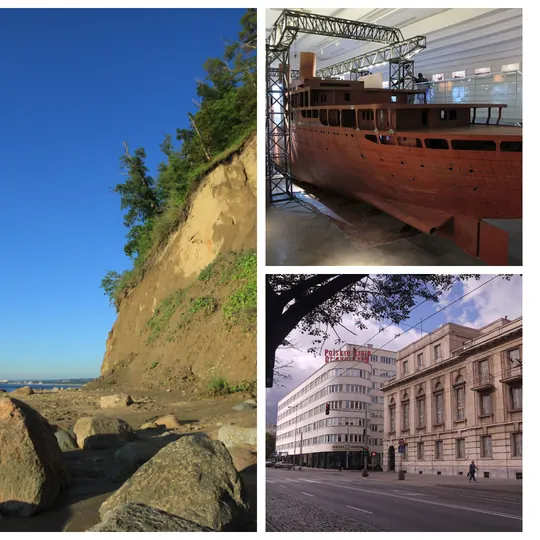
Bulwar, Dar Pomorza i ORP Błyskawica, Dworzec Morski, Orłowo z klifem i Gdyński Szlak Modernizmu.
2-5 godzin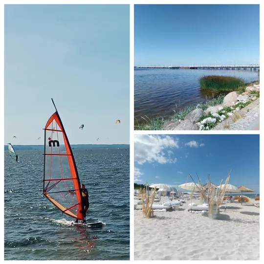
Rejs statkiem na Hel, latarnia morska, fokarium, bunkry Rejonu Umocnionego Hel i Muzeum Rybołówstwa.
7-8 godzinWycieczki dla osób indywidualnych, rodzin, firm, szkół i grup zorganizowanych.
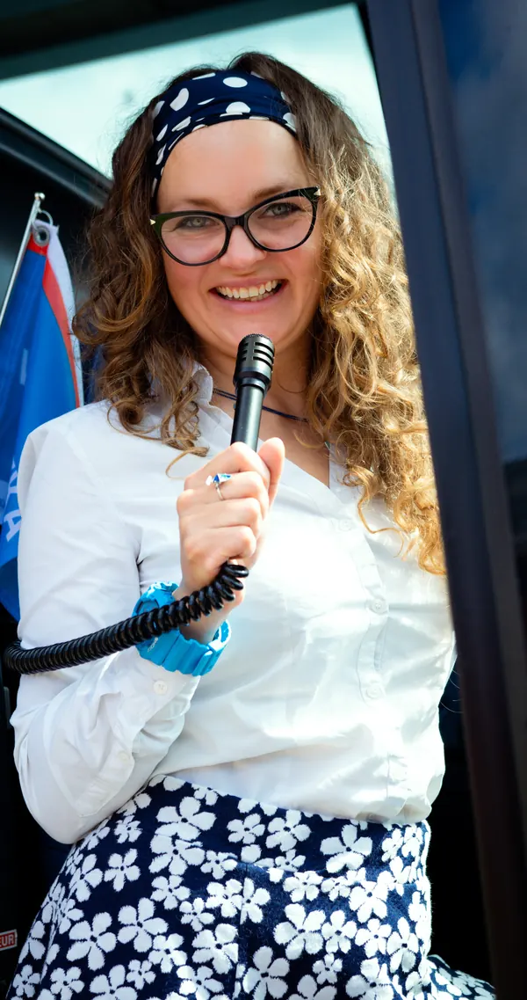
Od czerwca 2017 roku mam licencję na oprowadzanie turystów i grup zorganizowanych po Trójmieście i Półwyspie Helskim. Historia i kultura Trójmiasta są moją pasją, dlatego stale pogłębiam wiedzę. Ukończyłam podyplomową gedanistykę na Uniwersytecie Gdańskim, a obecnie studiuję muzealnictwo na Uniwersytecie Warszawskim.
W wolnych chwilach pływam na windsurfingu i desce SUP, jeżdżę rowerem i podróżuję. A może widzimy się na desce?
"Hania was unbelievably courteous, kind and had a wealth of information about Gdansk and the surrounding areas along the Baltic."
Joel Mazmanian, USAGdańsk od dawna nazywany jest polską Wenecją, a z perspektywy spokojnych wód Motławy jest jeszcze piękniejszy. SUP to deska z wiosłem: intuicyjna, relaksująca i łatwa do opanowania.
Jeśli nigdy nie pływałeś na desce, nie obawiaj się. Najpierw nauczymy Cię podstaw wiosłowania, a potem spojrzymy na miasto od strony wody.
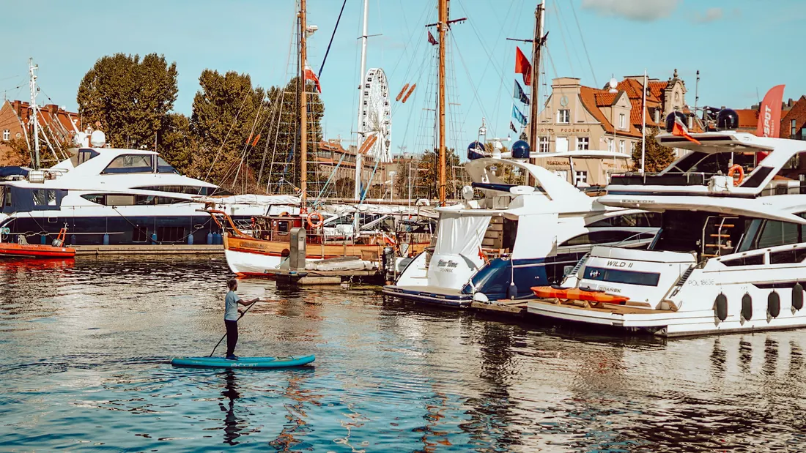
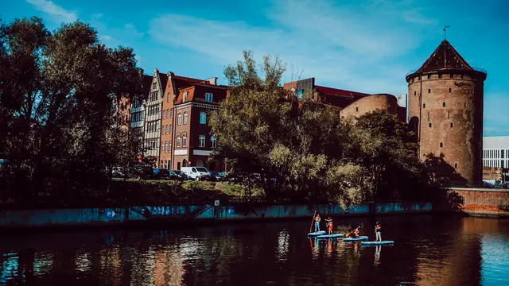
Na rowerze zobaczysz zabytkowe śródmieście, przemysłową stocznię i nadmorską promenadę. A gdy pogoda nie sprzyja, Trójmiasto ma muzea na światową skalę.
Jeździmy ścieżkami rowerowymi, a nad bezpieczeństwem grupy czuwa przewodnik i instruktor rowerowy. Wycieczki po polsku lub angielsku.
We wszystkich tych muzeach mam wymagane uprawnienia do oprowadzania.
Dzięki studiom na Politechnice Gdańskiej mieszkałam w Rumunii: w Sibiu, Bukareszcie i Suczawie. Podróżowałam po niej wzdłuż i wszerz i poznałam jej kulturę, język i mieszkańców. Dziś chętnie wracam tam z turystami z Polski jako pilot i przewodnik.
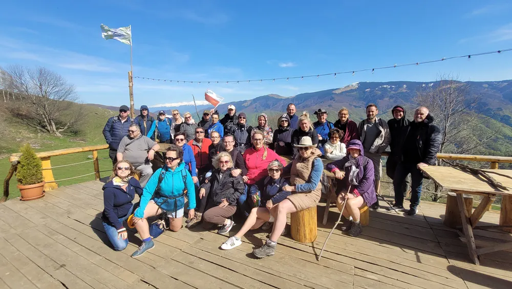
Jestem certyfikowanym pilotem wycieczek krajowych i zagranicznych. Pomogę ułożyć program według Państwa potrzeb i budżetu: noclegi, restauracje, bilety i przejazdy, tak żeby zostało tylko pakowanie.
Zapytaj o wyjazdWraz z rozwojem firmy pojawili się u mojego boku nowi współpracownicy. Oto osoby, które zobaczycie najczęściej.
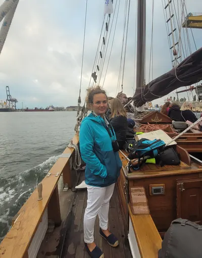
Oprowadza pieszo, na rowerze, w kajaku, na desce SUP, na łodziach i żaglowcach. Pilot i przewodnik grup do Rumunii.
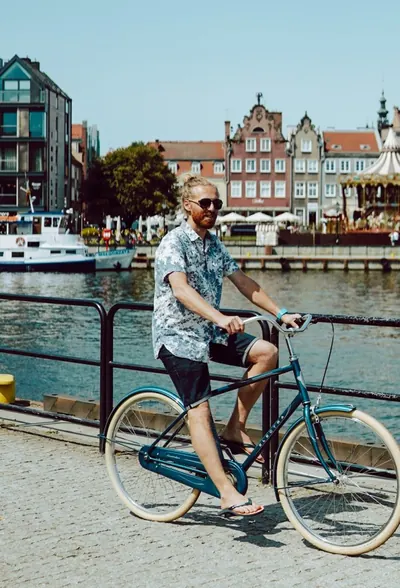
Certyfikowany przewodnik turystyki rowerowej i instruktor pływania na desce SUP. Opiekun wycieczek rowerowych i spływów.
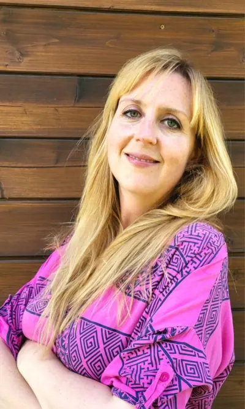
Licencjonowana przewodniczka po Gdańsku, Sopocie, Gdyni i Półwyspie Helskim. Opowiada ciekawie i z humorem.
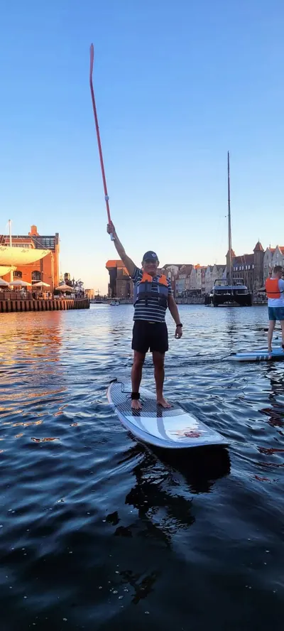
Urodzony gdańszczanin, absolwent historii UG. Oprowadza po Trójmieście, w ECS, Muzeum Emigracji i Muzeum Stutthof.
Brałam udział w krajoznawczym spływie kajakowym po Motławie. Hania z wielkim zaangażowaniem opowiadała historię miasta i świetnie zna topografię Gdańska. Szczerze polecam jej usługi przewodnickie.
Hanna Adamus była pilotem grupy turystycznej w sezonie letnim 2018 w Rumunii. Dała się poznać jako dobry pilot i przewodnik, posiada duży zasób wiedzy i umiejętność nawiązania bezpośredniego kontaktu z uczestnikami.
Hania was a very nice and knowledgeable guide. She is very friendly and hospitable. We are so grateful to her for guiding us and making our ten days stay in Poland memorable.
Hania jest urzeczona Rumunią i gotowa tłumaczyć jej specyfikę w atrakcyjny, pełen lekkości sposób. Dzięki urokowi osobistemu połączonemu z profesjonalizmem rozbijała napięcie podczas trudnych sytuacji.
Hania was unbelievably courteous, kind and had a wealth of information about Gdansk and the surrounding areas along the Baltic. Within the first few minutes of meeting Hania, we knew she was that person.
Ceny za grupę, brutto. Płatność gotówką, przelewem lub BLIK. Oferta na wycieczki kilkudniowe ustalana jest indywidualnie.
| Zwiedzanie | PL | EN | RO |
|---|---|---|---|
| Trójmiasto, Półwysep Helski, Mierzeja Wiślanado 3 godzin / każda kolejna godzina | 550 zł+120 zł | 550 zł+110 zł | 650 zł+120 zł |
| Europejskie Centrum Solidarności | 500 zł | 500 zł | 600 zł |
| Muzeum II Wojny Światowej | 550 zł | 550 zł | 650 zł |
| Muzeum Emigracji | 500 zł | 500 zł | 550 zł |
| Muzeum Gdańska | od 400 zł | od 400 zł | od 450 zł |
PL, EN, RO: język oprowadzania.
Napisz, kiedy przyjeżdżasz, ile osób będzie w grupie i co chcesz zobaczyć. Odpowiem z propozycją trasy.